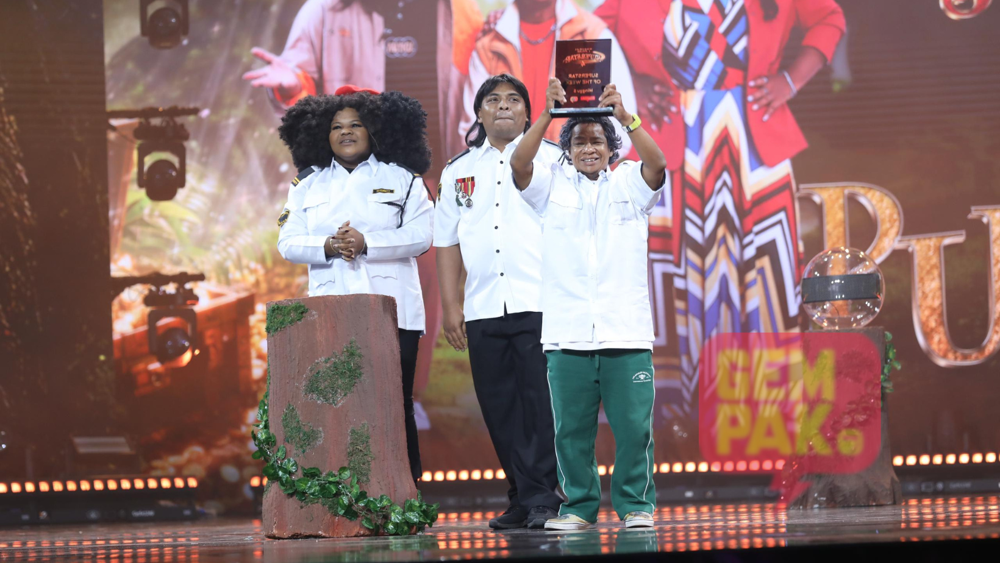

Selepas kejayaan filem aksi nombor 1 paling laris di Malaysia, Sheriff, pengarahnya Syafiq Yusof kembali dengan "Telekinesis", sebuah naskhah eksklusif hanya di Astro First bermula 10 Oktober.
Pernah menang pada minggu kelima, kumpulan yang dianggotai Man Raja Lawak, Ali Putehh dan Aya Amiruddin mendapat markah tertinggi sebanyak 61.17 peratus.

Kemenangan itu juga memberi kelebihan kepada Putehh apabila mereka boleh memilih giliran untuk membuat persembahan pada minggu hadapan.
Untuk MLS4 minggu kelima yang berlangsung di Pusat Kovensyen CIDB, Kuala Lumpur, kumpulan Zuara yang dianggotai Zulin Aziz, Nizam Jentik-Jentik dan Chiwan hampir tersingkir disebabkan mendapat markah paling rendah.
Untuk minggu keenam, lokasi pilihan untuk kumpulan perlu membuat dua persembahan iaitu tempat seram & awam dan lagu karoke.
#1 Seluar Danial Zaini hampir ‘terlondeh’ masa buat persembahan
#2 Peminat Deroyan paling semangat, siap sing along
#3 Bukan saja seluar Danial tapi seluar Man Raja Lawak pun asyik terlondeh je… tapi sebab memang bawa watak pakai seluar besar
#4 Buat pertama kali, ketiga juri Saiful Apek, Anna Jobling & Harith Iskander ‘standing ovation’ untuk kumpulan Putehh
#5 Anna Jobling panggil Aretoy ‘sayang’… tapi sebab Aretoy bawa watak sebagai anak Anna Jobling
#6 Saiful Apek bagi ‘standing ovation’ kepada kumpulan Padie
#7 Ini senarai penuh markah untuk minggu kelima MLS4
Persembahan setiap kumpulan dinilai oleh juri sebanyak 70 peratus manakala lagi 30 peratus adalah hasil daripada undian online di gempak.com/muzikallawaksuperstar.
Program lawak ini bersiaran secara langsung bermula 22 September selama sembilan minggu, pada setiap hari Ahad, pukul 9 malam di Astro Warna (saluran 107).
‘Muzikal Lawak Superstar 4’ dimeriahkan dengan gandingan barisan juri yang merangkumi muka-muka baharu
Program komedi ini menampilkan gabungan dua figura legenda dalam industri komedi iaitu pelawak Saiful Apek dan Harith Iskander, bersama dengan pelakon wanita popular, Anna Jobling di bangku juri manakala Datuk AC Mizal sebagai pengacara utamanya.
‘Muzikal Lawak Superstar 4’ bersiaran secara langsung dari Pusat Konvensyen CIDB, Cheras, dan turut boleh distrim di Astro Warna.